Kabelsalat
Paßt oder paßt nicht - das ist die Frage. Denn Monitore an den C 128 anzuschließen ist eine Wissenschaft für sich. Studieren Sie mit uns und erlangen Sie das »Summa cum laude« der Kabeltechnik.
Der C 128 bietet wahrlich eine exzellente Schnittstellenvielfalt zum Anschluß eines Monitors. Einziger Haken an allem: Die Norm fehlt. Zwar sind (Achtung Insiderinformation) alle notwendigen Signale vorhanden, dafür fehlt aber für den Anschluß eines zufällig vorhandenen, oder möglicherweise preisgünstig erstandenen Monitors das passende Kabel. Aber was ist schon ein Kabel im Vergleich zu einem exzellenten, flimmerfreien Farbbild in allen Lagen? Lassen wir uns also nicht von den verwirrenden Signalen aus dem Konzept bringen und machen uns an die Herstellung der Verbindung. Zunächst ist es natürlich notwendig, die Belegungen aller Schnittstellen zu betrachten. Am C 128 findet man zwei Ports zum Anschluß eines Monitors. Der erste Anschluß ist sicherlich allen C 64 Besitzern bekannt - es ist der 8polige Kleingerätestecker, dessen Belegung Sie in Bild 1 finden. Neu dagegen ist der 9polige Cannon-Stecker, der zum Anschluß eines RGB-Monitors gedacht ist (Anschlußbelegung in Bild 2).
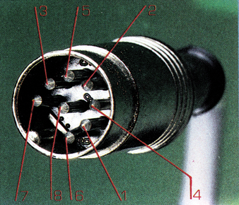
1 Luminanz
2 Masse
3 Audio out
4 Video out
5 Audio in
6, 7 unbelegt
8 Chrominanz
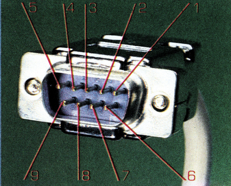
1, 2 Masse
3 R
4 G
5 B
6 Intensität
7 Luminanz (Monochrom-Signal)
8 Vertikale Synchronisation
9 Horizontale Synchronisation
Wer für wen
Wer nun zu dem Schluß gekommen ist, daß es ja letztendlich gleichgültig ist, an welchem Port der Monitor angeschlossen wird, muß leider enttäuscht werden. Der 8polige Kleingerätestecker (wie beim C 64) eignet sich nur für 40 Zeichen und 25 Zeilen sowie der farbigen 320 x 200 Grafik. Andererseits ist es dem RGB-Port vorbehalten, 80 Zeichen darzustellen. Falls Sie keinen Monitor haben, der beide Anschlüsse besitzt, (umschaltbar) sollten Sie sich für eine der beiden Lösungen (Composite oder RGB) entscheiden, oder den später beschriebenen Trick anwenden. Das Kabelproblem ist deswegen natürlich noch nicht gelöst. Deshalb ist es sicherlich sinnvoll, die wichtigsten Möglichkeiten von Anschlüssen zu betrachten, mit denen Ihr Monitor ausgerüstet sein könnte.
1. Anschlüsse von monochromen Monitoren
Bei den monochromen Monitoren mit FBAS-Eingang gibt es glücklicherweise so etwas wie einen Standard. Bei fast allen auf dem Markt verkauften Geräten findet man eine Cinch-Buchse. Die Anschlußbelegung eines Cinch-Steckers dafür finden Sie in Bild 3. Es kann auch vorkommen, daß Sie eine drei-, fünf-, sieben- oder achtpolige Kleingerätebuchse vorfinden. In diesen Fällen sollte Ihr Stecker auf Pin 1 (Bild 1 und Bild 4 bis 6) mit dem Luminanz-Signal (Helligkeit) beschaltet sein. Sie können natürlich auch das Video-Signal (FBAS) verwenden, haben dann allerdings eine leichte Qualitätseinbuße, da ja das Video-Signal auch das bei monochromen Monitoren nicht benötigte Chrominanz-Signal enthält. In seltenen Fällen kann es vorkommen, daß Ihr Monitor mit einer BNC-Buchse (BNC-Stecker zeigt Bild 7) ausgestattet ist. In diesem Fall sollten Sie das Luminanz-Signal auf den Mittelstift legen. Falls Ihr Monitor eine 9polige Cannon-Buchse hat (Bild 2), genügt es, das Luminanz-Signal an Pin 7 der Cannon-Buchse zu legen. Ganz gleich, welchen Stecker Sie verwenden - vergessen Sie auf keinen Fall die Masse (Anschlüsse siehe Bild 1 bis 7).
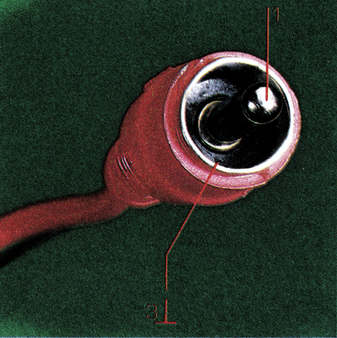
1 FBAS 3 Masse
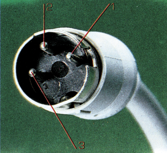
1 FBAS
2 Masse
3 Audio
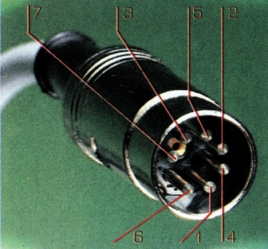
1 Luminanz
2 Masse
3 Audio out
4 Video out
5 Audio in
6, 7 unbelegt
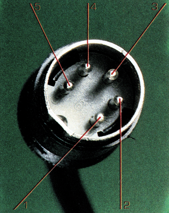
1 Schaltspannung für Wiedergabe
2 Video in
3 Masse
4 Audio in
5 +12 V
Bild 6. DIN 5polig am alten C 64
1 Luminanz
2 Masse
3 Audio out
4 Video out
5 Audio in
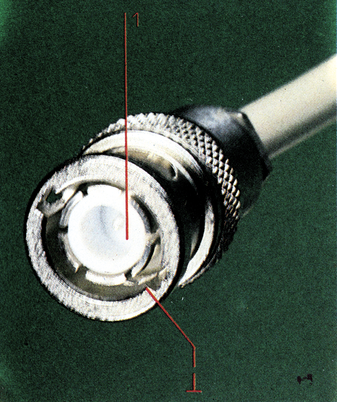
1 FBAS Masse
2. Anschlüsse von farbigen oder monochromen Fernsehern mit Monitor-Eingang
Viele Fernseher sind mit einem Monitor-Eingang (AV/SCART) ausgerüstet. Man hat dadurch den Vorteil, die Modulation-Demodulation des Video-Signals auf einen hochfrequenten Träger zu umgehen. Solche Monitor-Eingänge sind hauptsächlich zum Anschluß an Videorecorder vorgesehen. Man kann diese Buchse aber durchaus auch für den Computer verwenden. Wenn Sie an der Rückseite Ihres Fernsehers eine Cinch-, BNC- oder Kleingeräte-Buchse vorfinden, gilt das gleiche wie für monochrome Monitore (Luminanz- oder FBAS-Signal verwenden).
Etwas komplizierter wird das Ganze, wenn Ihr Fernseher mit einem SCART-Stecker ausgestattet ist. Die in Bild 8 dargestellte Anschlußbelegung zeigt die gebräuchlichsten Signale. Hier reicht es, wenn Sie das Luminanz- oder Videosignal an Pin 20 anschließen. Eine Besonderheit stellt die 5polige Kleingerätebuchse der VCR-Norm (Bild 9). Bei ihr muß das Luminanz- oder Videosignal an Pin 2 angeschlossen werden, Masse befindet sich an Pin 3. Achten Sie darauf, daß weder Pin 1 noch Pin 5 mit Ihrem Computer verbunden sind. Die dort vorhandene Schaltspannung zum automatischen Umschalten könnte für Ihren C 128 tödlich sein. Benutzen Sie deshalb statt der Schaltspannung lieber die AV-Taste Ihres Fernsehgerätes, wenn Sie den Fernseher als Videomonitor verwenden wollen.
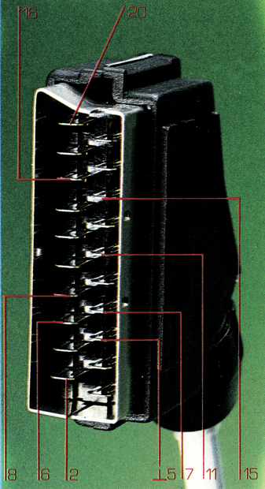
2 Audio links
5,17 Masse
6 Audio rechts
7 Blau
8 Schaltspannung (12 V)
11 Grün
15 Rot
16 Austast-Blanking (1-3 V)
20 Bei RGB: Synchronisation
Sonst: FBAS/BAS
3. Verwendung des RGB-Signals für RGB-Farbmonitore
Der C 128 liefert ein sogenanntes digitales RGB-Signal. Mit diesem digitalen Signal lassen sich beim C 128 acht Farben erzeugen.
Achten Sie deshalb darauf, daß Ihr RGB-Monitor ebenfalls ein digitaler Monitor ist. Solche Monitore sind in der Regel mit einem 9poligen Cannon- oder einem 8poligen VTR-Stecker (Bild 2 und 10) ausgerüstet. Bei diesen Anschlüssen genügt es, alle gleichnamigen Signale miteinander zu verbinden. Eine Besonderheit ist das beim C 128 an Pin 7 anliegende Luminanzsignal des RGB-Ausgangs. Dieses Signal läßt sich bestens dazu verwenden, einen monochromen Monitor mit BAS-Eingang anzuschließen. Auf einem monochromen Monitor werden bei Verwendung dieses Signals sogar 80 Zeichen und 25 Zeilen sehr scharf abgebildet (Anschlußschema: siehe Bild 11 bis 13)
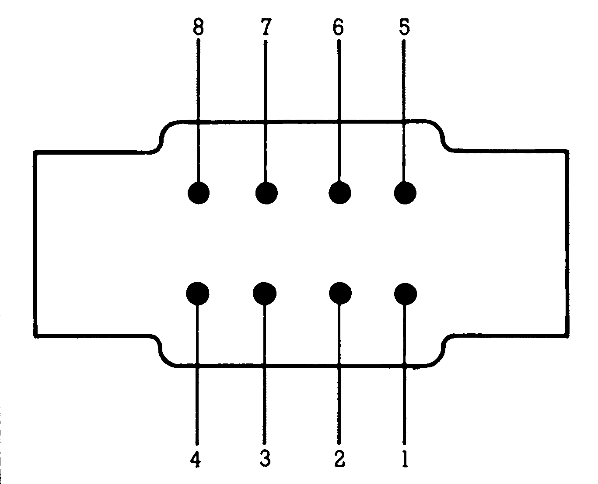
1 GND
2 GND
3 HSync
4 VSync
5 Intensity
6 Rot
7 Grün
8 Blau
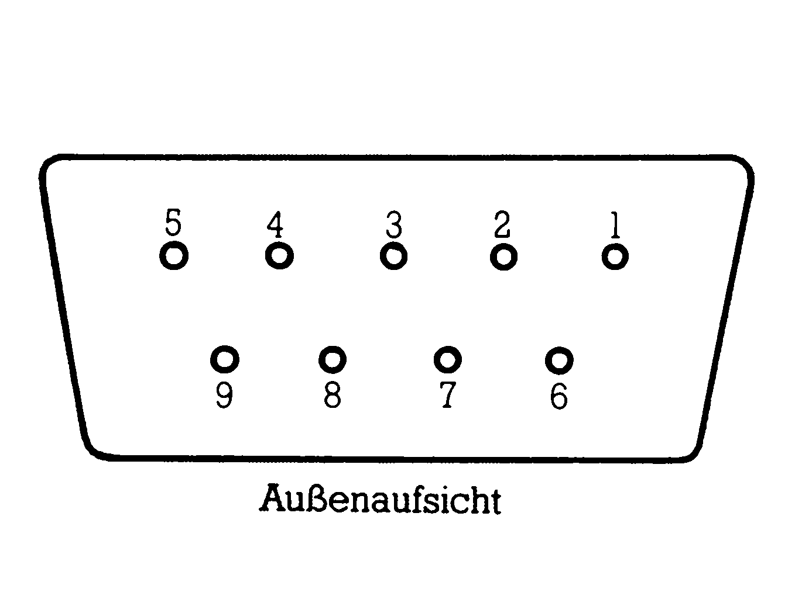
1 GND
2 GND
3 Rot
4 Grün
5 Blau
6 Intensität
7 Luminanz
8 Vertikale Synchronisation
9 Horizontale Synchronisation
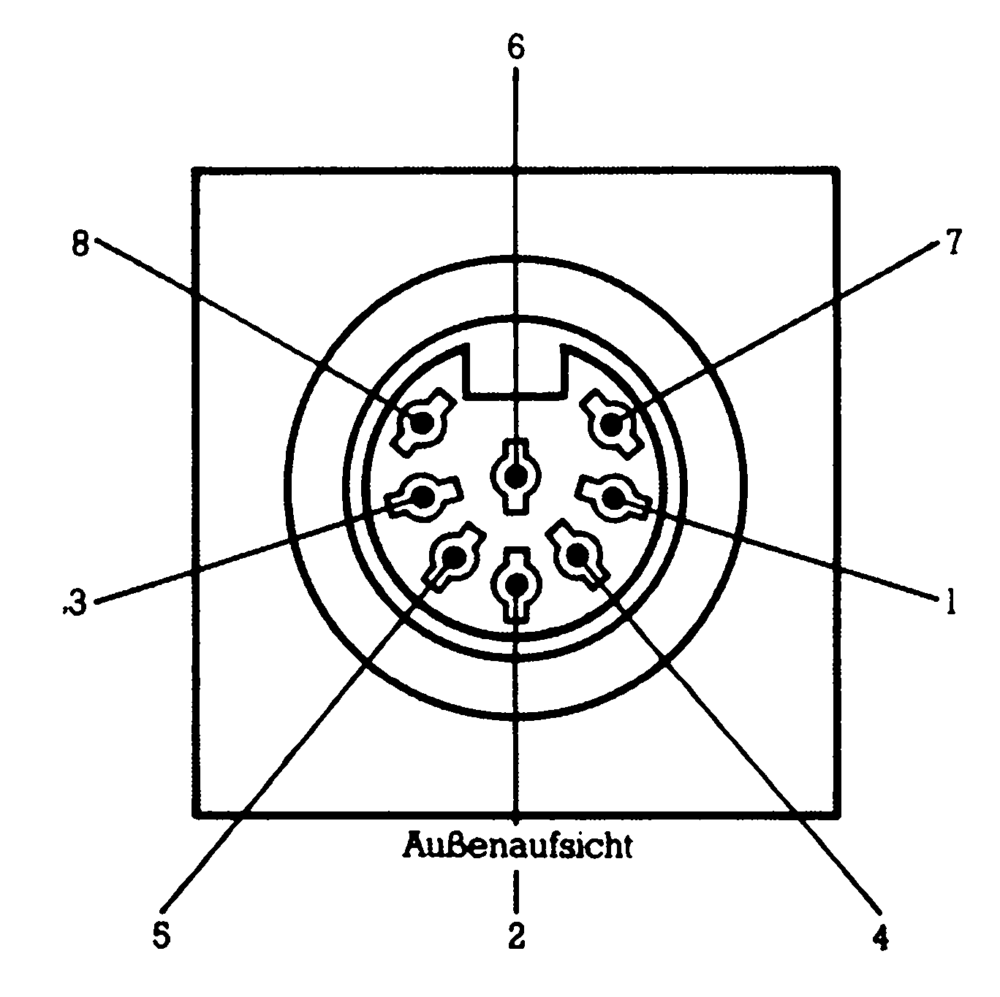
1 Luminanz
2 Masse
3 Audio out
4 Video out
5 Audio in
6 frei
7 frei
8 Chrominanz
| Cannon 9 polig | Scart | DIN 5 | Cinch | BNC |
|---|---|---|---|---|
| Pin 7 mit | Pin 20 | Pin 2 | Pin 1 | Pin 1 |
| Pin 1 mit | Pin 5 | Pin 3 | Pin 2 | Pin 2 |
Der Trick mit dem Schalter
Wem die Schaltung im Artikel »Ein Monitor ist genug« zu aufwendig ist, der kann sich natürlich auch mit einem einfachen Umschalter behelfen. Wie in Bild 15 zu sehen, wird zwischen dem RGB-Luminanzsignal und dem normalen Luminanzsignal (monochrom) oder dem Videosignal (Farbe) umgeschaltet.
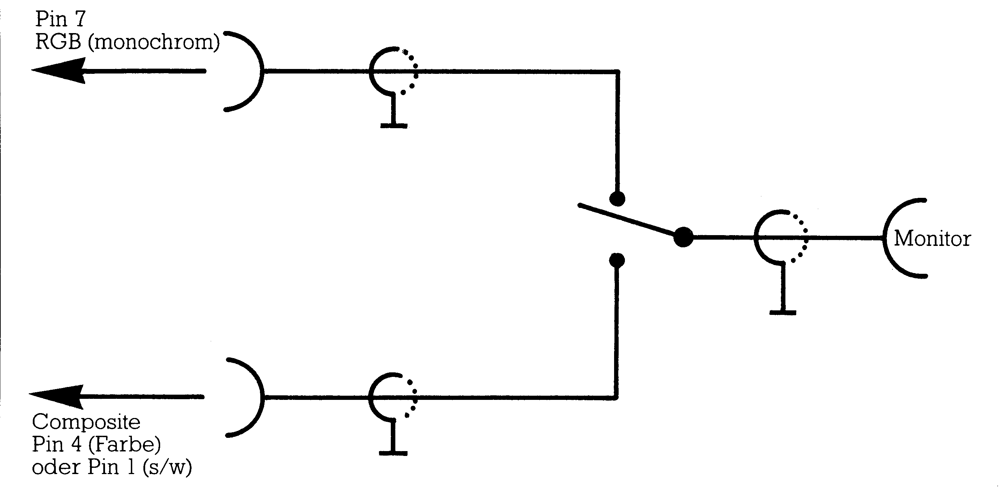
Billige Centronics-Schnittstelle
| C 128 | Signal | Centronics |
|---|---|---|
| A | GND | 16 |
| B | Flag = AKG | 10 |
| C | D0 | 2 |
| D | D1 | 3 |
| E | D2 | 4 |
| F | D3 | 5 |
| H | D4 | 6 |
| J | D5 | 7 |
| K | D6 | 8 |
| L | D7 | 9 |
| M | PAZ = Strobe | 1 |
Der C 128 besitzt, ebenso wie der C 64, einen User-Port. Und auch wie beim C 64 kann man diesen User-Port als Centronics-Schnittstelle umprogrammieren. Dies ist besonders für die Programme WordStar, Multiplan und dBase II, die es für den CP/M-Modus gibt, interessant, zumal die notwendige Schnittstellensoftware gleich eingebaut ist. Das Kabel kann sich jeder auf einfache Weise selbst herstellen. Alles was man braucht, ist ein User-Port-Stecker und ein Centronics-Stecker (Amphenol), sowie zirka einen Meter 16poliges Rund- oder Flachkabel. Bild 14 zeigt, wie die beiden Stecker miteinander verlötet werden müssen.
(aw)